FY | 2026–27
By Sameer Anand & Aman Kumar
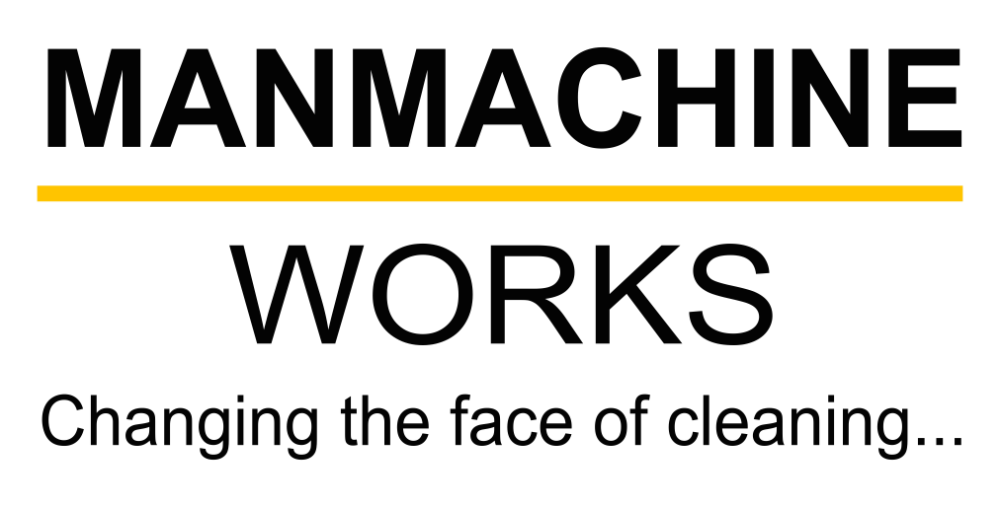
Asst. Manager Social Media Marketing
Responsible for developing, implementing, and managing social media strategy across all three brands — driving brand awareness, audience engagement, and qualified business leads.
Result-driven strategies aligned with brand goals; tracking trends, tools, and audience behaviour to optimise performance continuously.
Plan and execute 36+ high-quality reels per month with consistency in posting, branding, and conversion-oriented storytelling.
Monitor and actively engage with audiences across platforms to build trust, loyalty, and long-term retention.
Track reach, engagement, and leads. Optimise content based on data insights and present regular performance reports.
Scripting & Structuring the campaigns throughout Manmachine Works, Express Car Wash & Menzerna.
Monitor brand presence across platforms and handle issues swiftly with pre-planned response strategies to protect brand reputation.
Graphic Designer & Video Editor
Posts, Events, Campaigns
Instagram, Facebook, YouTube
Service, Offers, Franchise
Banners, Event Creatives
Banners & Visual Assets
Social Media + Events
Design + Video
June - Jan vs Feb–March
In just two months, a focused strategic shift delivered exponential growth across every key metric — with 50% less content producing dramatically superior results.
| Metric | June–January | Feb–March | Growth |
|---|---|---|---|
| Static Views | 300–400 | Up to 14,000 | ~30x growth |
| Reel Views | 300–1,000 | Up to 8,000 | ~5x – 8x growth |
| Engagement | 1–3 likes | 20–100+ interactions | ~10x growth |
| Leads / Enquiries | 1–7 | 15–25+ | Up to 10x growth |
| Link Clicks | 5–10 | 150–200 | ~20x growth |
| Skip Rate | 70–75% | 45–55% | ~25% improvement |
from June 2025 -Jan 2026
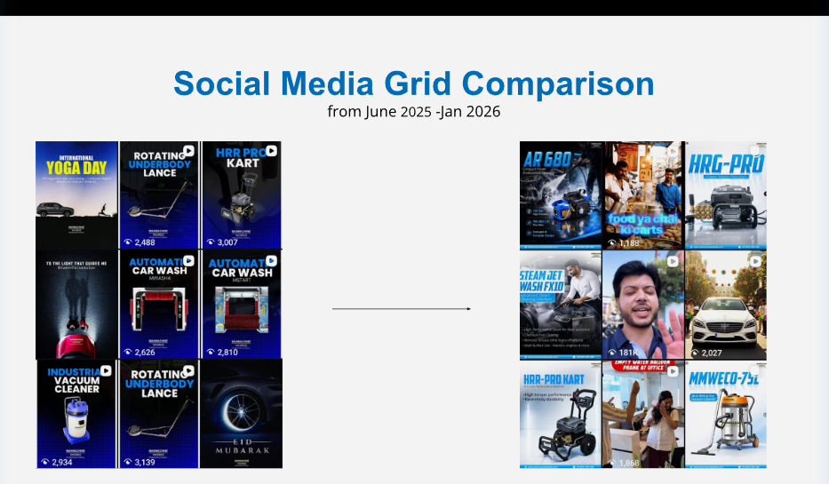
from June 2025 -Jan 2026
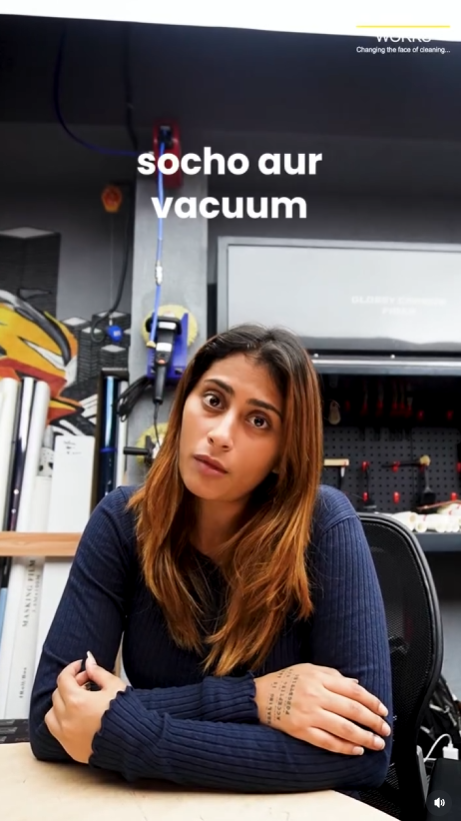
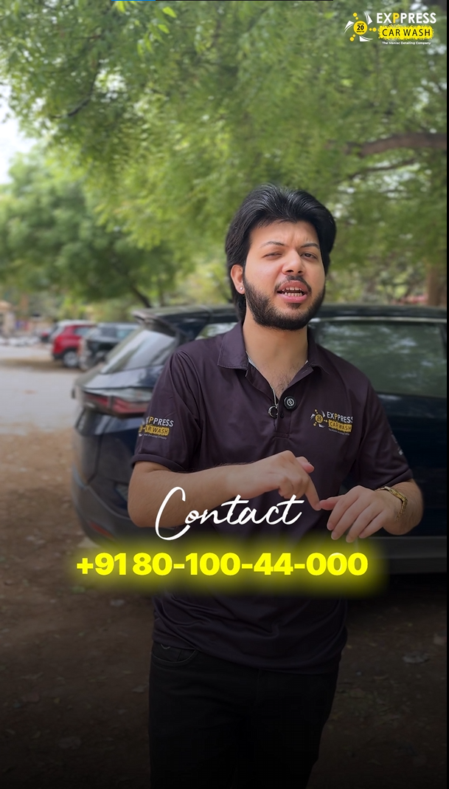
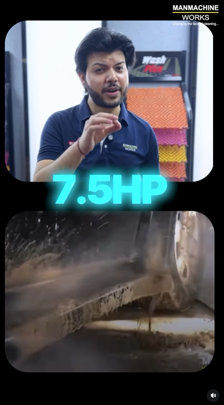
from June 2025 -Jan 2026
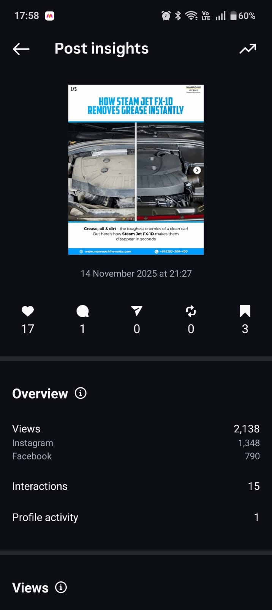
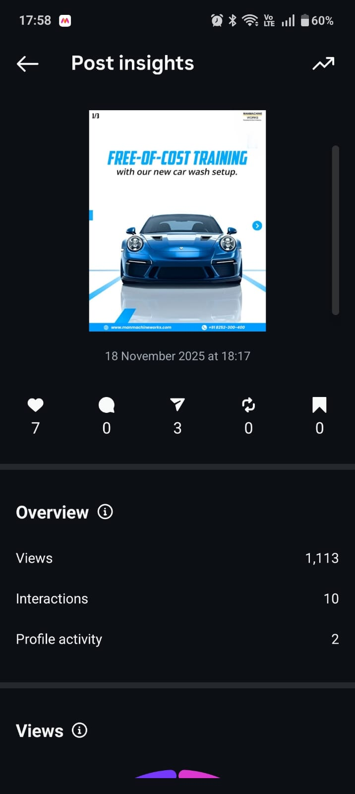
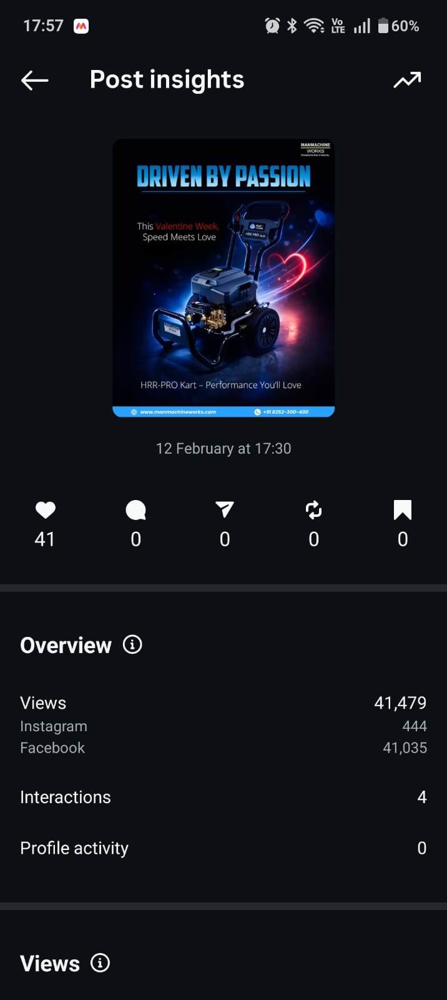
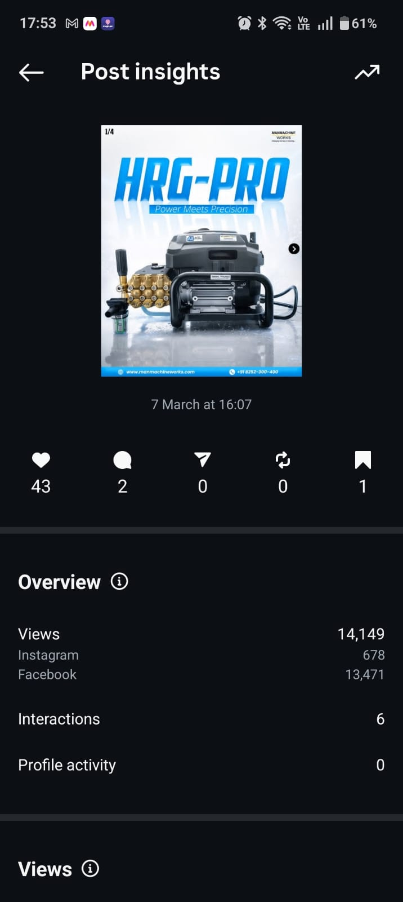
from June 2025 -Jan 2026
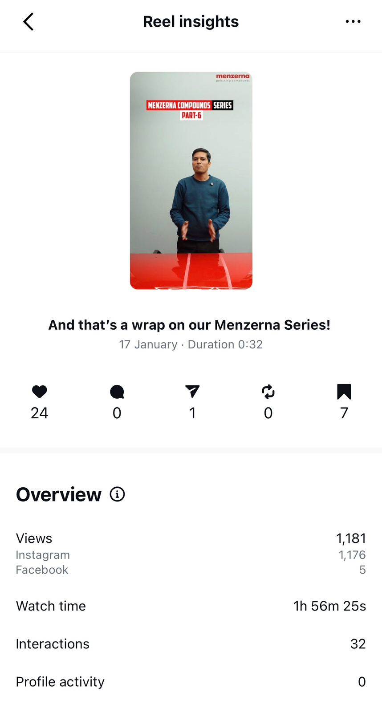
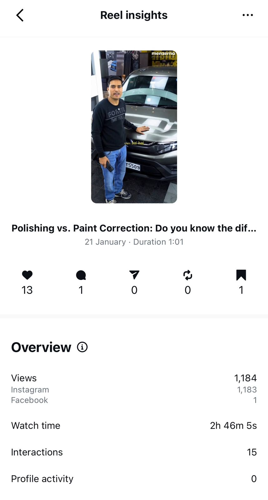
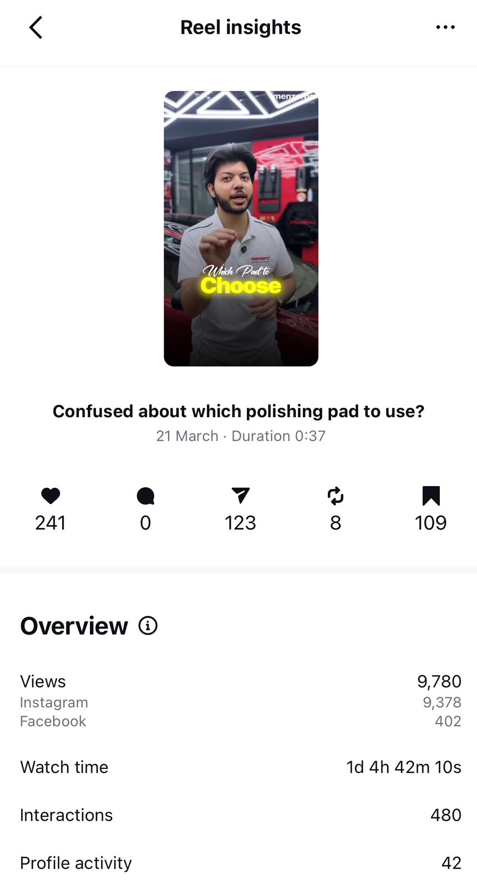
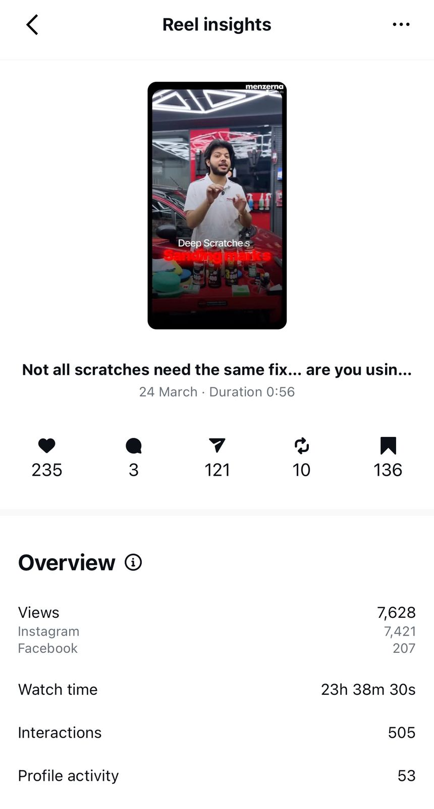
Brand-Wise Breakdown
Highlight: Menzerna evolved from low engagement to producing highly shareable and save-worthy content — the strongest indicator of genuine audience connection.
The Strategic Shift
Combined Impact
Up from just 300–400 static views in January — a 30x surge in visibility.
Engagement exploded from just 1–3 likes to 20–100+ per post across brands.
Traffic surged from 5–10 clicks to 150–200 per post, driving real web visits.
Qualified enquiries grew 3x–10x, directly supporting business development.
Down from 70–75%, showing significantly improved audience retention on reels.
Menzerna reels achieved unprecedented shareability — a breakthrough moment.
Forward Strategy
Building on proven growth, the next phase focuses on scalable systems, repeatable formats, and conversion-first content — targeting 36 high-impact reels per month (12 per brand).
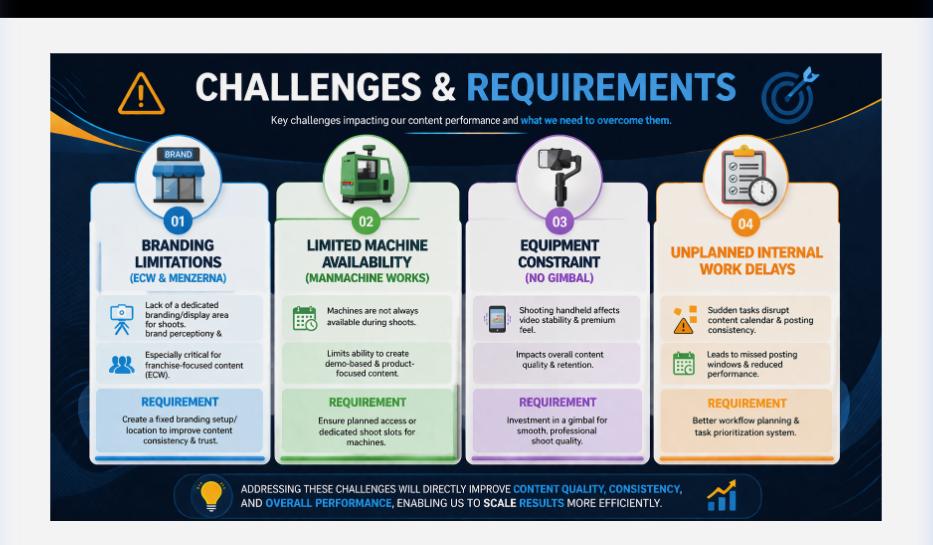
Strategic Assessment
30x reach, 10x engagement, high-performing reels, strong conversion, organic growth.
45-55% skip rate, scaling quality content challenge.
Scale reels 10K-20K+, increase conversions, build brand authority, leverage trends/influencers.
Algorithm fluctuations, content fatigue risk.
With proven organic momentum already established, the strategic opportunity is clear: double down on what works, address retention gaps, and expand reach through collaborations — while staying agile against platform algorithm shifts.
Investment & Returns
₹20,000 per brand Total across 3 brands = ₹60,000/month
These require separate campaign-based budgets on a monthly or bi-monthly basis.
| Metric | Estimated Result |
|---|---|
| Reach | 2M – 3M |
| Reel Views | 50K – 1L |
| Engagement | 3K – 8K interactions |
| Leads/Enquiries | 20 – 65 |
| Metric | Combined Result |
|---|---|
| Reach | 6M – 8M/month |
| Reel Views | 1.5L – 3L |
| Engagement | 10K – 25K |
| Leads | 25 – 100/month |
FY 2026–27
With compounded monthly growth of 10% per month, all three brands are on track for a ~3x increase in reach, followers, and conversions within 12 months — transforming them into dominant digital presences in their respective categories.
Solidify content systems, establish repeatable high-performing formats, and reduce skip rate to 35–40% across all brands.
Activate influencer and distribution marketing. Push consistent 10K–20K reach per post. Double monthly lead volumes across brands.
Establish all three brands as top-performing digital platforms in their categories — with 10K–30K reach per post, strong communities, and revenue-generating social channels.
Consistent 10K-30K reach per post across Manmachine Works, Express Car Wash, and Menzerna.
Active, loyal audiences who interact, share, and save — driving organic amplification at scale.
Social media converted into a measurable business asset — generating leads, franchise enquiries, and product sales consistently.